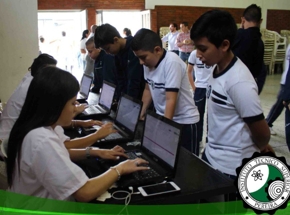
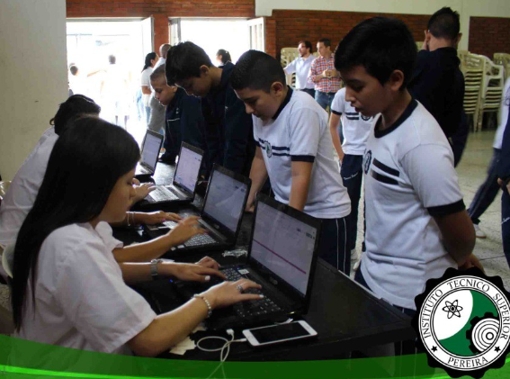

El Instituto Técnico Superior de Pereira es una institución educativa con tradición, compromiso y excelencia en la formación de jóvenes. Nos enfocamos en el desarrollo de competencias académicas, técnicas y humanas que permiten a nuestros estudiantes enfrentar con éxito los retos del mundo actual.
Nuestra área de Programación y Tecnología impulsa la creatividad, la innovación y el pensamiento lógico, brindando las herramientas necesarias para construir proyectos que transformen el futuro.
 
